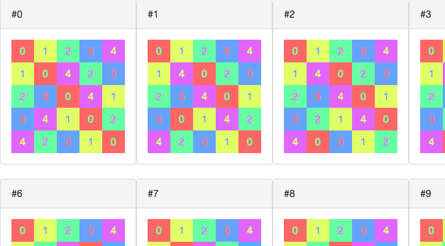
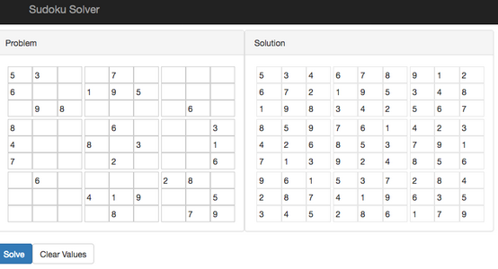

Posted on Nov 24
Latin squares and Sudoku programatically generated are show below. These are screenshots of web apps created using JavaScript and a SAT solver library.
| Example: Latin Squares 1 of size 5 |
|---|
|  |
| Example: Sudoku 2 |
|---|
|  |
These problems can be expressed as Boolean satisfiability problems (SAT) 3 and solved using a SAT solver.
I chose the
logic-solver4
JavaScript library to solve Latin squares and Sudoku.
The central part of the program is listed below.
More details will follow later in this page.
// solver: an instance of Logic.Solver where Logic is the logic-solver module.
// vars: a multi-dimensional (n x n x n) array of variable names.
// range: a utility function to make an array of integers from 1 to n.
function latinSquare(solver, vars) {
const n = vars.length;
range(n).forEach((i) => {
range(n).forEach((j) => {
solver.require(Logic.exactlyOne(range(n).map((k) => (vars[k][i][j]))));
solver.require(Logic.exactlyOne(range(n).map((k) => (vars[i][k][j]))));
solver.require(Logic.exactlyOne(range(n).map((k) => (vars[i][j][k]))));
});
});
}
function sudoku(solver, vars) {
const n = vars.length;
const m = Math.floor(Math.sqrt(n));
latinSquare(solver, vars);
range(m).forEach((i) => {
range(m).forEach((j) => {
range(n).forEach((k) => {
solver.require(Logic.exactlyOne(
range(n).map((l) => (
vars[m*i + Math.floor(l/m)][m*j + (l%m)][k]
))));
});
});
});
}
To run the apps, Node.js is required. Each demo app runs as a server and can be launched as below:
# Correct the following placeholders REPO and THE_DIR_OF_CLONED_REPO.
git clone $REPO
cd $THE_DIR_OF_CLONED_REPO
yarn install
yarn run start
The app can be accessed via a web browser. The default port is 3000.
The Latin squares demo (sat-latin-square) has a form to enter a problem size
(from 2 to 6).
It starts generating (reduced) Latin squares of given size upon submission of the form.
To avoid heavy computational load,
not all the solutions are shown.
The Sudoku demo (sat-sudoku-solver) has two grids.
A partial assignment can be specified on the left grid.
The solver starts upon pressing the Solve button
and shows a solution, if any, on the right grid.
logic-solver in the AppsI use a variable Logic to refer to the module logic-solver.
const Logic = require('logic-solver');
Before constructing logical constraints,
some utility functions are defined.
The range function generates an array containing integers
ranging from zero to n-1.
function range(n) {
return Array(n).fill().map((x, i) => (i));
}
The genVars function generates variable names
each of which is indexed by a triple (r, c, s)
where r, c and s each indicates a row index, a column index
and a symbol respectively.
An index has the dimension of size x size x size.
A pair (r, c) specifies a cell in a Latin square.
Only one variable for each cell can have a true value.
A set of (r, c, s) triples for all the true variables
is the orthogonal array representation of a Latin square.
function genVars(prefix, size) {
return range(size).map((i) => (
range(size).map((j) => (
range(size).map((k) => (
[prefix, i.toString(), j.toString(), k.toString()].join('_')
))
))
));
}
A Latin square is an n x n array filled with n different symbols. The function latinSquare constructs a logical formula expressing the conjunction of the following logical conditions
The exactlyOne function returns an expression
requiring that only one of the variables given must be true
and thus can be used to express each one of the above conditions.
The require method is called
to instruct the solver that the given condition must be met
to satisfy the whole logical formula.
// vars = genVars('v', n)
function latinSquare(solver, vars) {
const n = vars.length;
range(n).forEach((i) => {
range(n).forEach((j) => {
solver.require(Logic.exactlyOne(range(n).map((k) => (vars[k][i][j]))));
solver.require(Logic.exactlyOne(range(n).map((k) => (vars[i][k][j]))));
solver.require(Logic.exactlyOne(range(n).map((k) => (vars[i][j][k]))));
});
});
}
Finally, Sudoku is defined as a Latin square with an additional alldifferent constraint on each subgrid that has the dimension m x m where m x m = n.
function sudoku(solver, vars) {
const n = vars.length;
const m = Math.floor(Math.sqrt(n));
latinSquare(solver, vars);
range(m).forEach((i) => {
range(m).forEach((j) => {
range(n).forEach((k) => {
solver.require(Logic.exactlyOne(
range(n).map((l) => (
vars[m*i + Math.floor(l/m)][m*j + (l%m)][k]
))));
});
});
});
}
Running the (Sudoku) solver and obtaining a possible solution is as trivial as the following snippet:
const n = 9;
const solver = new Logic.Solver();
sudoku(solver, genVars('v', n));
const solution = solver.solve();
If no solutions are found, solution is null.
Using this fact allows us to get all the possible solutions
by iterating the solve() method until it returns null.
An assignment that satisfies the constraints can be obtained
by using the solution.getMap() method
that returns a dictionary object that maps
a variable name to its Boolean value assignment.
I am really impressed at how useful a SAT solver can be.
Latin squares (and Sudoku) seemed to me really complex at first
but can be expressed very concisely with logic-solver.
I am wondering whether I want to further study this interesting technology
instead of just purposelessly producing toy programs like above.
2015 My gh-pages